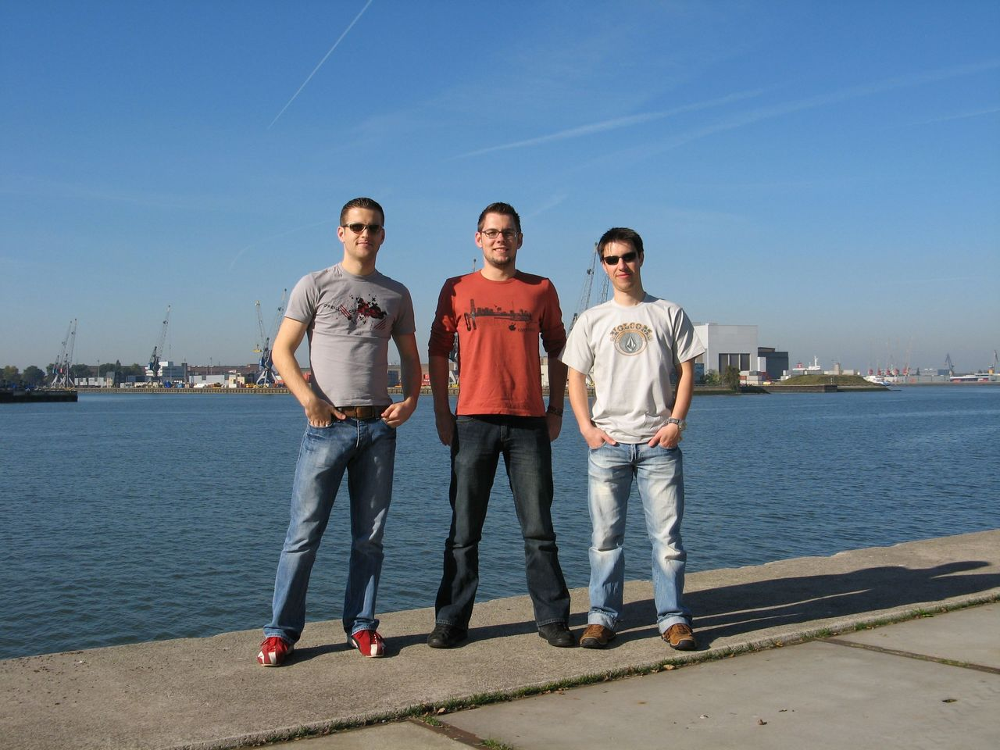
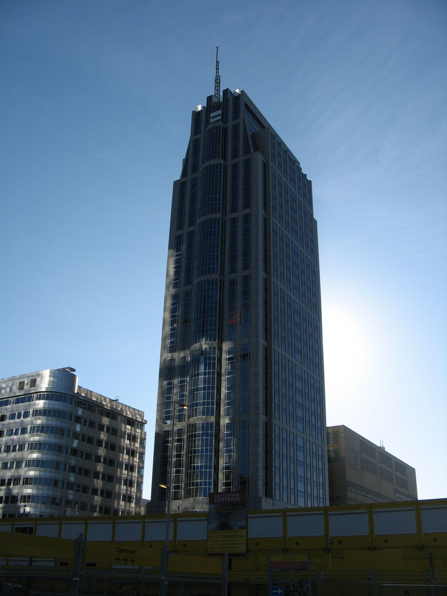

SAMSTAG, 20. OKTOBER 2007
Da an diesem Tag die „100% Tuning“ Show in Rotterdam stattfand, wir auch einmal einen etwas größeren Hafen auschecken
wollten und – für die Dudes selbstverständlich - wunderschönes Wetter war, ging’s mit dem Zug nach Rotterdam. Die
Fietsen waren aber selbstverständlich auch dabei – man will ja standesmäßig durch die Stadt cruisen. Kurz am Bahnhof die
Lage checken und dann auf zum Hafen – der ist ja nicht schwer zu finden - ist ja quasi überall. Das einzige was fehlte
waren die großen Schiffe – aber es war ja Sonntag: Da arbeiten in Holland nicht einmal die. Dann halt einfach in der
Sonne chillen und ein paar Fotos knipsen – auch nicht schlecht.


Schön relaxet (das sind wir aber eigentlich immer) ging’s dann zu Highlight dieses Tages. (mehr + Video !! im nächsten
Post)